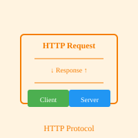

HTTP

HTTP (HyperText Transfer Protocol) is the request-response protocol used by the World Wide Web to enable communication between clients and servers. It defines how messages are formatted and transmitted over the Internet, establishing the rules for how data should be exchanged between a web client (such as a browser) and a web server. When you click a link, submit a form, or request a page in your browser, you are initiating an HTTP transaction. HTTP operates on top of TCP/IP (Transmission Control Protocol/Internet Protocol) and uses port 80 by default for unencrypted communications.
HTTP operates on a simple request-response model. A client, typically a web browser, sends an HTTP request to a server, specifying what resource it wants (the URL), what method to use (GET, POST, PUT, DELETE, etc.), and additional information in headers. The server receives this request, processes it, and sends back an HTTP response containing a status code (such as 200 for success or 404 for not found), response headers, and the requested resource content (such as HTML, images, or data). This straightforward model has proven to be highly effective and scalable for distributing content across the Internet.
A critical evolution of HTTP was the development of HTTPS (HTTP Secure), which adds a layer of encryption using SSL/TLS (Secure Sockets Layer/Transport Layer Security). HTTPS protects sensitive information from being intercepted or modified during transmission, making it essential for secure transactions such as banking, shopping, and password authentication. Today, HTTPS is considered the standard for web communication, and browsers actively discourage unencrypted HTTP connections. HTTP/2 and HTTP/3 are newer versions that improve performance and efficiency through features like multiplexing and header compression. Understanding HTTP is fundamental to web development and understanding how the modern web functions.